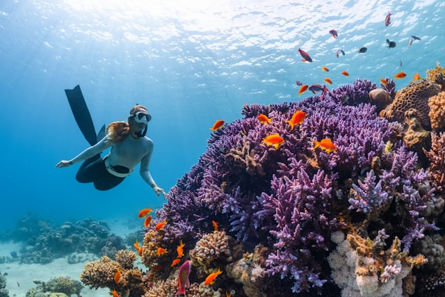
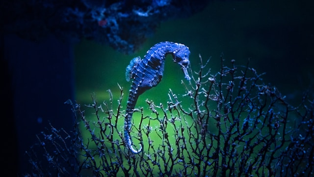
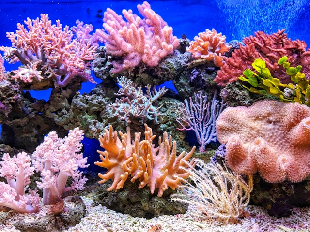

1. What is marine biodiversity?
Marine biodiversity refers to the variety of life found in oceans and seas. It includes every living organism, from microscopic plankton to giant whales, as well as the ecosystems they form together. Healthy marine biodiversity maintains ecological balance and supports food chains that sustain both marine life and human communities.
The ocean is home to an estimated 700,000 to 1 million marine species, and scientists believe many more remain undiscovered.

Figure: Healthy marine ecosystem containing diverse marine species.
2. Coral reefs and food chains
Coral reefs are among the most diverse ecosystems on Earth. Although they cover only a small part of the ocean floor, they provide food and shelter for thousands of marine species. These reefs form the foundation of complex marine food webs and help maintain healthy ocean ecosystems.
Coral reefs cover less than 1% of the ocean floor, yet they support roughly a quarter of all known marine species.

Figure: Vibrant coral reef ecosystem.
3. Sea turtles
Sea turtles are ancient marine reptiles that have lived in the world's oceans for millions of years. Today they face serious threats from plastic pollution, illegal hunting, habitat destruction, and climate change. Conservation programmes around the world work to protect nesting beaches and reduce human impacts on these endangered animals.
Six of the seven sea turtle species are currently classified as threatened or endangered by the IUCN.

Figure: A green sea turtle swimming in the ocean.
4. Dolphins and whales
Dolphins and whales are intelligent marine mammals that play important roles within ocean ecosystems. They are threatened by ship strikes, noise pollution, fishing nets, and plastic waste. Protecting these animals helps preserve healthy marine biodiversity.
Whale waste fertilises ocean plankton, which in turn produces a significant share of the oxygen we breathe.

Figure: A large whale swimming beneath the ocean surface.
5. Why biodiversity matters
Marine biodiversity supports global food security, regulates Earth's climate, protects coastlines, and provides livelihoods for millions of people. A healthy ocean is essential for sustainable development and the well-being of future generations.
Over 3 billion people rely on the ocean as their primary source of protein and livelihood.

Figure: A diverse array of marine species coexisting in a healthy ocean ecosystem.
6. How to protect endangered marine species
Everyone can contribute to protecting marine life by reducing plastic waste, supporting marine protected areas, practising responsible tourism, participating in beach clean-ups, and choosing sustainable seafood. Small individual actions can collectively make a significant difference in preserving ocean biodiversity.
Marine protected areas currently cover less than 8% of the world's oceans, short of the 30% target set for 2030.

Figure: Marine species living in a protected ocean habitat.